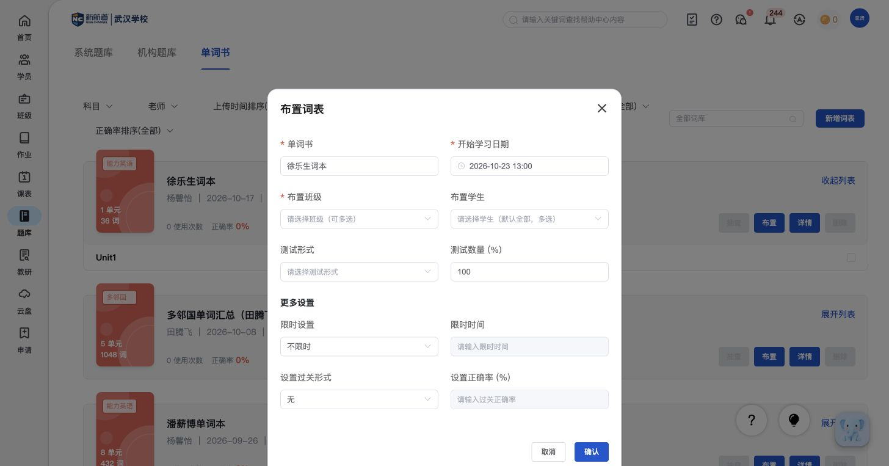
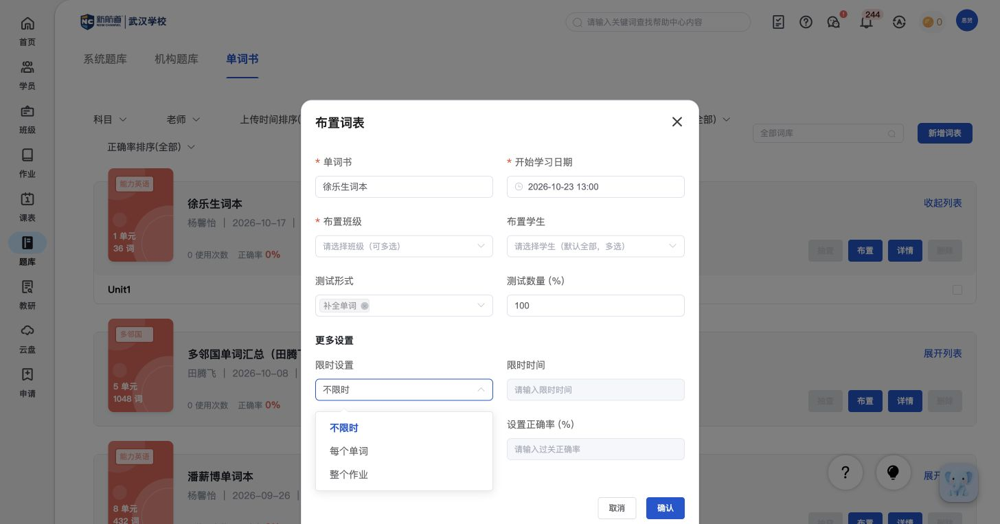
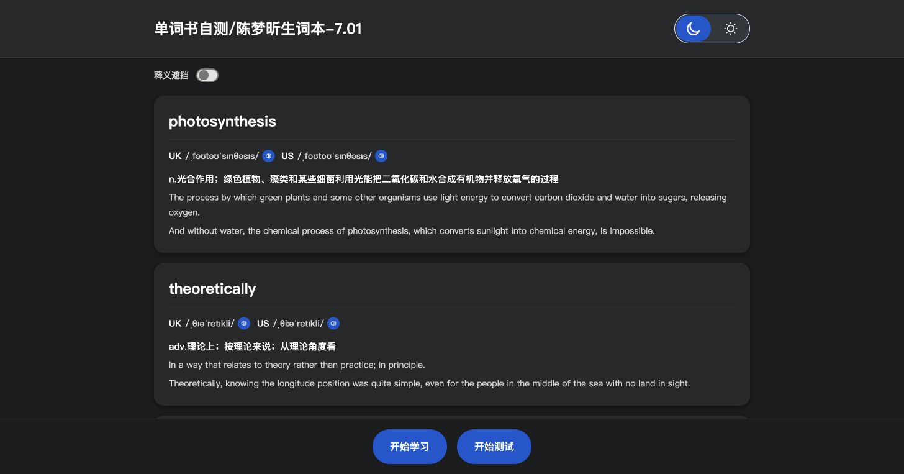

XX049核心教师端学员端
单词书学习
老师布置整本词书并设置测试要求，学员按单元学习、自测并查看进度。
教师端怎样实现
- 整本词书布置时，选择开始学习日期、班级和学生，再指定测试形式与测试数量百分比。
- 限时方式可选不限时、每个单词或整个作业，并设置限时时间；过关方式可选无或正确率，再填写过关正确率。
- 词书详情汇总学习人数、完成率和测试正确率；可进入个人详情，查看单元进度、正确率和错词。
- 单元词表保留词数、发音、释义和例句；指定部分单元抽查的差异在“词书抽查”统一说明。

教师端｜题库 · Q52｜布置整本词书学习（点击查看原图） 点击查看原图
教师端｜整本词书的限时方式：不限时、每个单词或整个作业。 点击查看原图教师端｜词书过关形式与正确率设置；单元解锁规则仍待补。 点击查看原图原菜单说明：教师 · 词书学习与抽查 · 教师 · 词汇学习情况
学员端怎样实现
- 总览显示累计已学、今日已学和待复习错词数；每本书显示单元数、词数、正确率和完成度。
- 展开后按单元显示词数、正确率和学习状态：已学单元可看结果，当前可学单元可开始，后续单元显示未解锁。
- 查看详情后可按单元进入词表或查看本单元错词。
- 词表提供英美音标和发音、双语释义、例句；可遮挡释义进行自查。
- 逐词学习显示当前单词和进度；翻卡后展示与单词有关的记忆配图。
- 每个词提供“认识、模糊、生疏”三种掌握判断。判断后如何安排复习，当前依据尚不能确认。
- 词表页提供“开始测试”，已学单元提供“查看结果”。
- 单元自测结果与词汇作业共用页面，可查看成绩、逐词解析、重新测试及关联订正练习。

学员端｜学习前词表：词义、例句、释义遮挡，以及学习和测试入口。 点击查看原图原菜单说明：学员 · 单词书学习进度 · 学员 · 词卡学习 · 学员 · 单元自测
两端关系：按常规教学流程理解；两端职责与页面差异在本项合并说明，不另计一套功能。
依据边界：整本布置中的测试比例、限时和过关字段已见；学员单元解锁与熟悉度如何影响后续学习尚未确认，不能把配置入口当作完整的自适应规则。
对比自己的产品：能否把词书长期学习、过关条件和阶段抽查结合起来。
XX050核心教师端
词书抽查
老师从词书单元中选择范围和数量进行阶段抽查。
依据边界：抽查数量、测试形式和部分实时开关已见；抽查学员样例未单独补齐。
对比自己的产品：能否按已学单元、词数和测试形式安排阶段检查。
XX051核心教师端学员端
词汇量测评
分别了解阅读和听力词汇水平，查看测评记录、CEFR等级与能力说明。
学员端怎样实现
- 从首页词汇卡片进入历史报告，查看测试时间、耗时及阅读和听力成绩。
- 详细报告分别显示词汇量、CEFR等级和文字能力说明，并提供平台的语言考试换算表。
- 报告可生成分享链接；重新测试前会提示将覆盖已有成绩。
 学员端｜能力报告：阅读与听力分开解释，不只展示一个总分。 点击查看原图
学员端｜能力报告：阅读与听力分开解释，不只展示一个总分。 点击查看原图原菜单说明：学员 · 词汇量测评
两端关系：按常规教学流程理解；两端职责与页面差异在本项合并说明，不另计一套功能。
依据边界：测评记录和结果已有样例，整场测评及估算规则未完整记录。
对比自己的产品：能否区分学过多少、掌握多少，以及词汇能力达到什么程度。